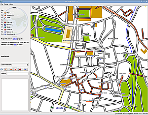
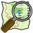
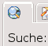
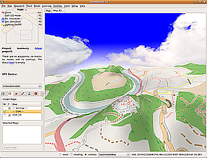
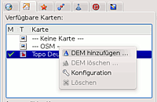
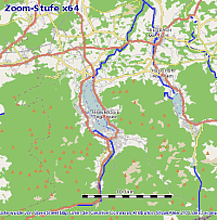
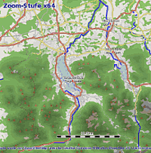
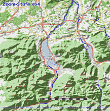
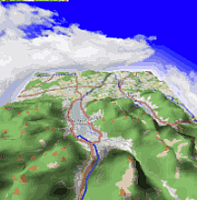

QLandkarteGT
Dieser Artikel wurde für die folgenden Ubuntu-Versionen getestet:
Ubuntu 16.04 Xenial Xerus
Ubuntu 14.04 Trusty Tahr
Zum Verständnis dieses Artikels sind folgende Seiten hilfreich:

QLandkarte GT  und QLandkarteM (mobile Geräte) sind die Nachfolgeprojekte des eingestellten Projekts QLandkarte und können als vollwertiger Ersatz für die proprietäre Software "MapSource" des Herstellers Garmin genutzt werden. Die Architektur des Programms wurde dabei durch den Autor Oliver Eichler überarbeitet und flexibler gestaltet, so dass größere Karten dargestellt und weitere GPS-Geräte unterstützt werden.
und QLandkarteM (mobile Geräte) sind die Nachfolgeprojekte des eingestellten Projekts QLandkarte und können als vollwertiger Ersatz für die proprietäre Software "MapSource" des Herstellers Garmin genutzt werden. Die Architektur des Programms wurde dabei durch den Autor Oliver Eichler überarbeitet und flexibler gestaltet, so dass größere Karten dargestellt und weitere GPS-Geräte unterstützt werden.
Die bisherigen Funktionen wurden dabei beibehalten und um neue erweitert. Waypoints, Tracks, Routen und Karten können von und zu GPS-Geräten übertragen werden. Die aktuelle Version enthält weiterhin viele Funktionen, welche die Bearbeitung (Zusammenfügen, Teilen etc.) und die Auswertung (Höhen-, Zeitprofil, 3D-Darstellung) von Tracks ermöglichen.
Unterstützte Formate:
GPS-Exchange (.gpx)
TrainingsCenterExchange (.tcx)
Geocaching.com-EasyGPS (.loc)
MapSource (.gdb)
Google Earth (.kml)
QLandkarte-GT-Format (.qlb)
Das Speichern ist bisher nur im .qlb- und .gpx-Format möglich.
Hinweis:
Die Weiterentwicklung von QLandkarte GT wurde inzwischen zugunsten des Nachfolgers QMapShack eingestellt. Dieses kann ab Ubuntu 15.10 über das Paket qmapshack installiert werden.
Installation¶
 QLandkarte GT ist in den offiziellen Paketquellen enthalten und kann über folgendes Paket installiert [1] werden:
QLandkarte GT ist in den offiziellen Paketquellen enthalten und kann über folgendes Paket installiert [1] werden:
qlandkartegt (universe)
 mit apturl
mit apturl
Paketliste zum Kopieren:
sudo apt-get install qlandkartegt
sudo aptitude install qlandkartegt
Hinweis:
Unter Ubuntu 16.04 ist das Paket qlandkartegt-garmin nicht mehr enthalten. Der Garmin-Support kann nur über das externe PPA hergestellt werden.
PPA¶
H.-Dirk Schmitt  stellt über ein "Personal Packages Archiv" (PPA] [2] aktuellere Versionen von QLandkarte GT bereit. Diese kann bei Problemen mit der Version aus den offiziellen Paketquellen benutzt werden. In diesem PPA sind zahlreiche weitere Programme enthalten. Um Problemen mit den offiziellen Paketquellen vorzubeugen, wird empfohlen, das PPA nach der Installation wieder zu deaktivieren.
stellt über ein "Personal Packages Archiv" (PPA] [2] aktuellere Versionen von QLandkarte GT bereit. Diese kann bei Problemen mit der Version aus den offiziellen Paketquellen benutzt werden. In diesem PPA sind zahlreiche weitere Programme enthalten. Um Problemen mit den offiziellen Paketquellen vorzubeugen, wird empfohlen, das PPA nach der Installation wieder zu deaktivieren.
Adresszeile zum Hinzufügen des PPAs:
ppa:dirk-computer42/c42-backport
Hinweis!
Zusätzliche Fremdquellen können das System gefährden.
Ein PPA unterstützt nicht zwangsläufig alle Ubuntu-Versionen. Weitere Informationen sind der  PPA-Beschreibung des Eigentümers/Teams dirk-computer42 zu entnehmen.
PPA-Beschreibung des Eigentümers/Teams dirk-computer42 zu entnehmen.
Damit Pakete aus dem PPA genutzt werden können, müssen die Paketquellen neu eingelesen werden.
Nach dem Aktualisieren der Paketquellen erfolgt die Installation wie oben angegeben.
Treiber für ältere Garmin Geräte¶
sollte der Ordner /usr/lib/qlandkartegt nicht existieren, müssen die Treiber nachinstalliert werden. Entweder man kompiliert die garmindev-Treiber von der Bitbucket -Seite  oder man installiert einfacher das fertige DEB-Paket von dieser Launchpad-Seite .
oder man installiert einfacher das fertige DEB-Paket von dieser Launchpad-Seite .
Benutzung¶
Nach erfolgreicher Installation findet man das Programm im K-Menü unter "Dienstprogramme -> QLandkarte GT" [3]. Der erste Start dauert in der Regel einige Zeit. Danach kann man unter "Einstellungen -> Allgemeine Einstellungen -> Geräte & Datentransfer" das GPS-Gerät einrichten.

Datenübertragung¶
Um Daten per USB-Anschluss vom und zum Gerät übertragen zu können, müssen die Rechte entsprechend der Anleitung gesetzt werden. Ist eine udev-Regel erstellt und das System neu gestartet, ist das Gerät lediglich anzuschließen.
Hinweis:
Das Laden und Speichern von Daten auf dem Gerät mit QLandkarte GT funktioniert nicht, wenn
Das Gerät als Massenspeicher eingebunden wurde
Das Gerät selber auf "Datenübertragung" eingestellt ist
Zoomfunktion umkehren¶
Wer mit der Zoomfunktion mittels Mausrad ständig falsch zoomt, kann die Zoomrichtung umdrehen. Die Einstellung findet sich unter "Einstellungen -> Allgemeine Einstellungen -> Umgebung -> Mausrad -> Richtung ändern". Alternativ kann die Karte auch mit den + - Tasten vergrößert/verkleinert werden.

Karten¶
Die zu verwendenden Karten müssen als Kartensatz vorliegen. Ein Kartensatz verfügt neben vielen durchnummerierten .img-Dateien auch über eine Basiskarte NAME.img und eine NAME.tdp-Datei. Das Laden eines solchen Kartensatzes erfolgt immer auf die gleiche Weise:
"Datei -> Karte laden"
Im ersten Auswahldialog die .tdb-Datei auswählen
Im zweiten Dialog die Basiskarte NAME.img auswählen
Hinweis:
Einzelne .img-Dateien, wie z.B. gmapsupp.img, können nicht geladen werden!
Benutzung ohne Kartensatz¶
 QLandkarte GT ist auch ohne Aktivierung eines Kartensatzes benutzbar. Allerdings können so keine Karten auf das Gerät übertragen werden. Man klickt einfach im Kartenmenü ( F1 ) doppelt auf "---OSM---". Da der Anfangszoomwert und die Position "Südpol" schlecht für die Suche nach einem geeigneten Kartenausschnitt sind, sucht man entweder einen Ort über das Suchen-Menü (siehe Bild) oder zoomt soweit aus dem Bild heraus, bis mehr von der Karte zu sehen ist. Anschließend hält man den Mauszeiger über den zu vergrößernden Bereich und zoomt wieder in die Karte hinein.
Vom Gerät heruntergeladene Tracks und Waypoints werden auf dieser Karte angezeigt. Ebenso verfügt die Karte über Höhenlinien, so dass auch die 3D-Ansicht genutzt werden kann.
OpenStreetmap¶
Computerteddy vom OSM-Projekt stellt eine fertige Garmin-Karte zum Download bereit, welche auf größtmögliche Kompatibilität, insbesondere mit den Handgeräten, ausgelegt ist.
Das Openstreetmap-Projekt stellt sehr detailreiche Karten bereit. Man sollte darauf achten, nur die Einzelkarten herunterzuladen, da die Karte "Deutschland komplett" nur die gmapsupp.img enthält und nicht mit QLandkarte GT verwendet werden kann. Diese Karten enthalten leider keine Höhenlinien und können deshalb nicht im 3D-Modus benutzt werden.
OpenMtbMaps¶
Die Karten von OpenMtbMaps werden nur noch als .exe-Dateien angeboten. Diese können aber einfach mit 7zip entpackt werden. Dazu muss das folgende Paket installiert werden:
p7zip-full (universe)
mit apturl
Paketliste zum Kopieren:
sudo apt-get install p7zip-full
sudo aptitude install p7zip-full
Die exe-Datei kann dann einfach mit:
7z x ….exe
entpackt [4][5] werden. Es gibt dann 3 tdb-Dateien:
…c.tdb: Karte inklusive Höhenlinien
…x.tdb: Karte ohne Höhenlinien
…z.tdb: nur Höhenlinien
Falls man verschiedene Karten vom gleichen Gebiet auf einem Garmin-Gerät installieren will, so sollte man die Höhenlinien nur ein mal installieren. In QLandkarte GT lädt man dann die gewünschte .tdb-Datei mit "Datei -> Karte laden" und wählt dann noch die zugehörige .img-Datei aus.
Karten auf GPS-Gerät übertragen¶
Garmin Dakota/Oregon¶
Bei diesen Geräten muss eine .img-Datei in den Ordner Garmin auf dem Gerät oder der Speicherkarte abgelegt werden. Die Datei wird wie folgt erstellt:
Karten im Reiter Karten auswählen.
Karte->Kartenausschnitt wählen.
im rechten Fenster mit der Maus den gewünschten Ausschnitt markieren.
links unten im Reiter Ausgewählte Karten den Eintrag auswählen.
darunter Karte exportieren drücken.
Namen und Verzeichnis eingeben.
Exportieren
die erzeugte Datei auf das Gerät kopieren.
3D-Ansicht¶
 Um die 3D-Ansicht nutzen zu können, sind folgende Schritte nötig:
Höhendaten eines Bereiches als Geo-Tiff Bild beschaffen¶
Die Höhendaten können als SRTM-Daten von CGIAR-CSI Projekt heruntergeladen werden. Auf der Internetseite wählt man den Bereich aus, klickt auf "Click here to begin search" und speichert das "DATA-FILE" auf der Festplatte (Achtung: Das Herunterladen kann unter Umständen sehr lange dauern). Das "MASK-FILE" wird nicht benötigt. Die gespeicherte ZIP-Datei wird nun in ein entsprechendes Verzeichnis entpackt[1]. Neben drei anderen Dateien enthält das Verzeichnis nun auch ein Geo-Tif-Bild mit dem Namen srtm_NUMMER.tif.
Bild anpassen¶
Da die Projektion des Bildes nicht richtig ist, muss es angepasst werden. Dazu benötigt man das Programm "gdalwarp", welches sich im Paket gdal-bin (universe) befindet [1]. Die Anpassung an die richtige Projektion wird mit folgendem Befehl [4] durchgeführt:
gdalwarp -t_srs "+proj=merc +lon_0=0 +k=1 +x_0=0 +y_0=0 +a=6378137 +b=6378137 +units=m +no_defs" -r cubic srtm_NUMMER.tif osm_srtm_NUMMER.tif
Die letzte Angabe ist der Dateiname für das angepasste Bild.
3D-Ansicht aktivieren¶
 Nun kann dieses Bild als Digital elevation model zur Karte hinzugefügt werden. Hierzu macht man im Kartenmenü auf der Karte einen  , wählt "DEM hinzufügen" und wählt das soeben konvertierte Bild aus. Nun befinden sich unterhalb der Karte drei zusätzliche Auswahlmöglichkeiten: "Keine", "Schattierung" oder "Kontur". Letztere zwei Optionen geben der Karte ein plastisches Aussehen. Die eigentliche 3D-Ansicht wird durch Drücken von
F8 aktiviert, oder man wählt im Menü den Punkt "3D-Karte". Im 3D-Kartenmodus befinden sich oberhalb der Karte zwei zusätzliche Reiter:
, wählt "DEM hinzufügen" und wählt das soeben konvertierte Bild aus. Nun befinden sich unterhalb der Karte drei zusätzliche Auswahlmöglichkeiten: "Keine", "Schattierung" oder "Kontur". Letztere zwei Optionen geben der Karte ein plastisches Aussehen. Die eigentliche 3D-Ansicht wird durch Drücken von
F8 aktiviert, oder man wählt im Menü den Punkt "3D-Karte". Im 3D-Kartenmodus befinden sich oberhalb der Karte zwei zusätzliche Reiter:
"Karte" : Zum Verschieben der Karte
"3D-Karte": Aktiviert die dreidimensionale Ansicht. Bei
auf der Karte lassen sich weitere Einstellungen vornehmen. Hier kann man auch durch Auswahl von "2D/3D Ansicht" zwischen Flächen- und Höhendarstellung wechseln.
Screenshots zur 3D-Ansicht¶
Als Beispiel sollen hier einmal die verschiedenen Ansichtsmöglichkeiten im 3D-Modus dargestellt werden. Zu sehen ist eine Ansicht des Tegernsees mit der ---OSM--- Karte, wobei die Karte von Computerteddy zusätzlich aktiviert wurde:
|  |
| Grundbild... |
|  |
| ...mit Schatten... |
|  |
| ... mit Konturen... |
|  |
| ... mit Höhenprofil. |
- Erstellt mit Inyoka
-
 2004 – 2017 ubuntuusers.de • Einige Rechte vorbehalten
2004 – 2017 ubuntuusers.de • Einige Rechte vorbehalten
Lizenz • Kontakt • Datenschutz • Impressum • Serverstatus -
Serverhousing gespendet von